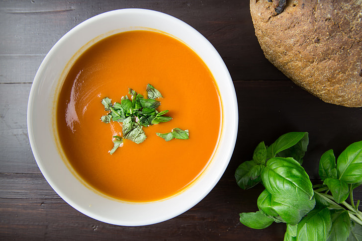

Roasted Tomato Soup
Recipe source: Youtube creator "Delicious".
Ingredients

3lbs/1.5 kg cherry tomatoes
1 big or small red onions
3 small snack peppers
A whole head of garlic, 8-12 cloves
2 sprigs of rosemary
1.5-2 tablespoons fresh thyme
Generous amount of olive oil
1 big or 2 smaller white onions
2 tablespoons/30g butter
1 tablespoon tomato paste
2.75 Cups/660ml vegetable stock or chicken stock
1 tablespoon dried oregano
Cayenne pepper or chilli
1 teaspoon smoked or sweet paprika
Half a tablespoon balsamic vinegar
1 tablespoon Worcestershire sauce
Half a teaspoon sugar
A good hanful fresh basil leaves
0.5 Cup/120ml heavy cream(optional)
Salt and black pepper
Directions
- Cut the red onions in quarters
- Cut the peppers in half and remove seeds/tough parts
- Peel the garlic whole
- In a large tray mix the tomatoes, garlic, peppers, red onion, rosemary and thyme
- Add a generous amount of olive oil, salt and pepper to the tray
- Roast in a preheated oven, fan on 375F/190C until caramelized for about 50-60 minutes
- When ready finely chop the white onions and saute it in butter in a fairly large pot
- Add tomato paste, mix it and add all the roasted tomatoes from the tray
- Then add everything thing else from the tray
- Add the stock, cayenne pepper, smoked paprika, balsamic vinegar, Worcestershire sauce, salt and pepper, if needed fresh basil
- Let it simmer on the stove for 8-10 minutes
- After take it off the stove and blend everything together
- Put it back on the stove and add the cream, when it starts to simmer, turn it off.
- Taste and season with more salt and pepper if needed
- Serve with toast with cheese of any choice
- Enjoy!
I made this recipe over winter and it is my favorite soup recipe as of right now. Its SUPER easy to make and doesn't take long at all. It's a great beginner soup meal in my opinion. I highly recommend serving with grilled cheese and dipping it in the soap!
Free recipes website!